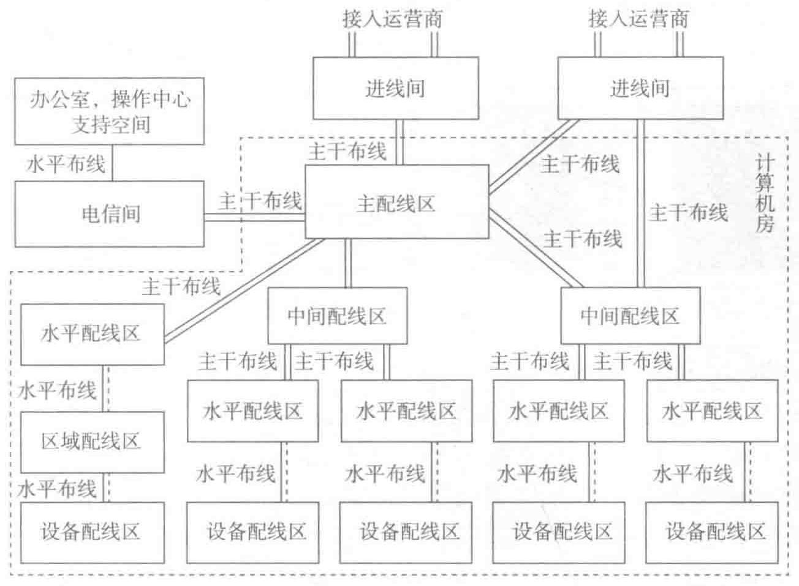

连接。根据需要，一个区域可以设置多个 IDA。分布式数据中心布线结构如图 7-17 所示。
如果数据中心的面积过大，或者存在较为分散的办公室和支持区，可以设置多个弱电间。
一个超大型的数据中心需要更多的接入间。图 7-17 显示了具有多个接入间和 IDA 的布线拓扑。其中，主接入间不能直接和 IDA 和 HDA 连接。一些超大型数据中心因线路的长度限制，应需要额外的进线间，在此情况下，次进线间可直接连线至中间配线区 IDA 和水平配线区 HDA 以解决线路超长问题。

7.4 不同的网络架构对布线方式的影响
7.4.1 EoR/MoR 和 ToR
根据网络交换机与配线设备设置的位置不同，网络列头柜可以设置于列头（EoR）、列中（MoR），网络设备也可以设置在机柜顶部（ToR）等。这些方法主要取决于服务器的种类、数量及网络架构。
1. End-of-Row/EoR
EoR 是最传统的方法，接入交换机集中安装在一列机柜端部的机柜内，通过水平缆线以永久链路方式连接设备柜内的主机 / 服务器 / 小型机设备。EoR 对设备机柜需要敷设大量的水平缆线连接到交换机，布线的成本会提高，布线通道中敷设大量的数据缆线也会降低